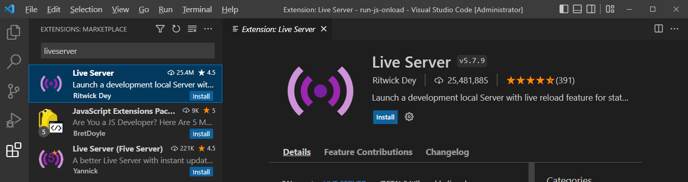
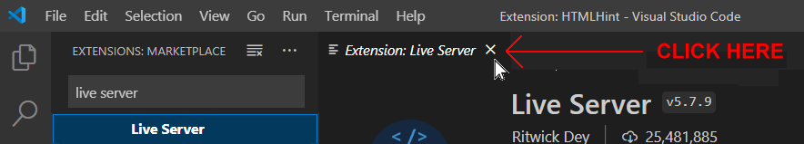

Learning Goals
At the end of this Tutorial, you will be able to:
- Download and install the free Microsoft Visual Studio Code (VS Code) application for creating web pages.
- Change Visual Studio Code default settings, such as line length and HTML tag auto-complete.
- Install Extensions to Visual Studio Code such as Live Server.
Using text editors with HTML and CSS
You will work with two main types of files in these Tutorials:
- Web pages, also known as HTML files, and
- Stylesheets, also known as CSS files.
Both HTML and CSS files are text files that can contain only letters (a,b,c, …), numbers (1,2,3, …), punctuation characters (;, ", ?, …), and symbols (€, ©, ®, …). Because text files can contain only those characters you can type on a keyboard, their content is similar to the output of paper documents created on old-style typewriters.

Text files can be created and edited with basic text editors such as Notepad (Microsoft Windows) and TextEdit (Apple Mac).
When working with often-complex HTML and CSS files, however, web designers and developers typically use text editors that offer a range of extra features that simplify the types of tasks they need to perform.
In these Tutorials, you will learn about and work with one such enhanced text editor: Microsoft Visual Studio Code or VS Code, for short.
Among the other free-forever or free-to-try text editors for working with HTML and CSS files are the following:
Sublime Text (Windows, Mac, and Linux) |
Brackets (Windows, Mac, and Linux) |
Atom (Windows, Mac, and Linux) |
TextMate (Apple only) |
Installing Microsoft Visual Studio Code
Follow these steps to download and install VS Code on your computer.
- Use your web browser to go to this web address: https://code.visualstudio.com
- Click the Download (for Window/Mac/Linux) button.

- Follow the usual download and installation instructions for your computer.
Visual Studio Code will install and then open on your computer. You will see that VS Code has added an icon to your Windows desktop and is listed with your other applications on your Windows Start menu.

Changing user settings in VS Code
Follow these steps to set the most convenient preferences in Visual Studio Code for working with HTML and CSS files.
- At the bottom-left of the VS Code screen, click the Gears icon.

- From the pop-up menu displayed, click the Settings command.
- VS Code opens a new window named Settings. At its top, you can see a Search settings box.

You can now change various settings in VS Code.
Typical VS Code settings for web designers
Here are some settings you may wish to change:
- In the Search settings box, enter ‘font size’ (without quotes), and increase the size to 16.

- In the Search settings box, enter ‘word wrap’ (without quotes), and select on.

- In the Search settings box, enter ‘HTML auto’ (without quotes), and deselect HTML: Auto Closing Tags.

- In the Search settings box, enter ‘match brackets’ (without quotes), and select never.

- In the Search settings box, enter ‘editor hover enabled’ (without quotes), and deselect the checkbox.

You can now close the Settings window.

About VS Code Extensions
VS Code allows you to install extra ‘mini-programs’ or ‘mini-apps’ called Extensions. Think of these as add-ons that help you to more quickly and easily build web pages with VS Code.
Almost all Extensions are created by independent developers and are available for free.
You can see a complete, searchable list of VS Code Extensions with user feedback ratings here:
Visual Studio Code Extensions Marketplace
VS Code has one Extension already built-in to it. It’s called Emmet.
Later, you will be using Emmet to create and edit your web pages.
Installing the Live Server Extension
One popular VS Code Extension is called Live Server. About 25 million web designers and developers have downloaded it.
Live Server launches a local development web server with a live reload feature both for static and dynamic pages. Every time you save your code, you'll instantly see the changes reflected in the browser. You'll be much faster at spotting errors and it's much easier to do some quick experiments with your code.
Follow these steps to install Live Server in VS Code.
- Along the left of your VS Code screen is a vertical list of large icons. This is known as the Activity Bar.
Click on the Extensions icon in the Activity Bar.

- Visual Studio opens a new window named Extensions at the left of your screen. Typically, it will show a list of currently popular Extensions. At the top of the list is a search box.

- In the Extensions search box, type Live Server.

- You can drag the right border of the Extension window further to the right, to see the full text of the search results.

- Click the Install button under the first search result.
- The top part of your VS Code window should now look similar to that below.  Live Server is now successfully installed. You do not need to restart VS Code.
- To close the Live Server Extensions window, click the close (X) icon at the top. 
- To close the Extensions search box, click the large Extensions icon in the Activity Bar at the left of the VS Code screen.
Pinning VS Code to your Windows Taskbar
As you will use VS Code frequently, it makes sense to ‘pin’ it to your Windows Taskbar. You can then launch it with a single click.
Follow these steps:
- In the Search Box at the left of the Taskbar, enter "Visual Studio Code" (without quotes).
- When the application name is displayed, right-click on it.
- Choose Pin to taskbar from the list of options displayed.

In future, when you need to launch VS Code, you can simply and quickly click the relevant icon on the Taskbar.